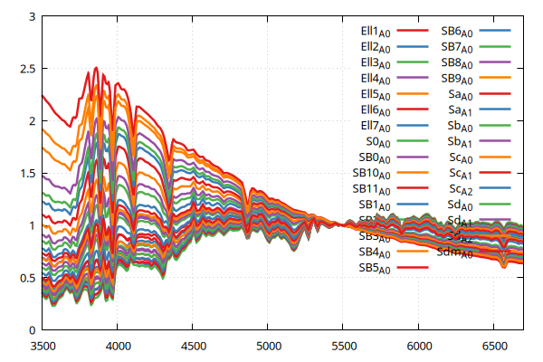
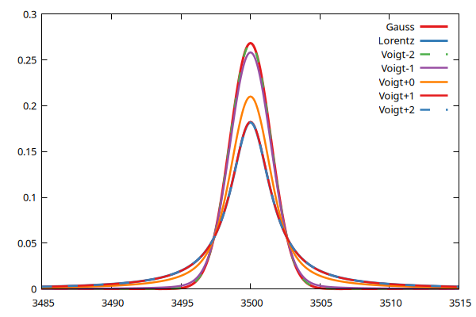

Components
The QSFit.jl package implements the following GModelFit-compatible components:
balmercont
Balmer continuum (λ < 3645Å) and pseudo-continuum (i.e. unresolved Balmer emission lines at λ < 3645Å).
using GModelFit, Gnuplot, QSFit
comp = QSFit.balmercont(1, 1)
@gp "set grid" :-
@gp :- xlab="Wavelength [A]" ylab="Lum. density [arb.units]" :-
@gp :- 3645.07.*[1,1] [0, 1.1] "w l notit dt 4 lc rgb 'black'" :-
x = Domain(1000.:4500)
@gp :- coords(x) comp(x, ratio=1) "w l notit lw 2 lc rgb 'red'"
@gp :- coords(x) comp(x, ratio=0.5) "w l notit lw 2 lc rgb 'blue'"cutoff_powerlaw
Continuum cutoff-powerlaw
gaussconv
Convolution of a spectrum sampled on a log-regular grid with a Gaussian kernel.
hostgalaxy
Host galaxy templates
SWIRE templates:
using GModelFit, Gnuplot, QSFit x = Domain(3e3:1.:2e4) @gp xr=[3500,6700] "set grid" :- for t in filter(x -> x[:library] == "swire", QSFit.list_hostgalaxy_templates()) local comp = QSFit.hostgalaxy(t[:template], library=t[:library]) @gp :- coords(x) comp(x) "w l t '$(t[:template])'" endIlbert+09 templates:
using GModelFit, Gnuplot, QSFit x = Domain(3e3:1.:2e4) @gp xr=[3500,6700] "set grid" :- for t in filter(x -> x[:library] == "ILBERT2009", QSFit.list_hostgalaxy_templates()) local comp = QSFit.hostgalaxy(t[:template], library=t[:library]) @gp :- coords(x) comp(x) "w l t '$(t[:template])'" end
interpolator
Interpolate generic template on a wavelength grid.
ironopt
Iron complex emission lines at optical wavelengths (from Véron-Cetty et al. 2004).
using GModelFit, Gnuplot, QSFit
x = Domain(3.5e3:7e3)
@gp "set grid"
comp = QSFit.ironopt_broad(5000.)
@gp :- coords(x) comp(x) "w l t '$(comp.fwhm)'"
comp = QSFit.ironopt_narrow(1000.)
@gp :- coords(x) comp(x) "w l t '$(comp.fwhm)'"ironuv
Iron complex emission lines at UV wavelengths (from Vestergaard & Wilkes 2001).
using GModelFit, Gnuplot, QSFit
x = Domain(1e3:1:3.5e3)
comp = QSFit.ironuv(3000.)
@gp "set grid" coords(x) comp(x) "w l notit"powerlaw
Continuum powerlaw.
sbpl
Continuum smoothly broken powerlaw.
using GModelFit, Gnuplot, QSFit
comp = QSFit.sbpl(20)
comp.alpha1.val = 2
comp.alpha2.val = -2
comp.delta.val = 0.5
x = Domain(0.7:0.01:500)
@gp coords(x) comp(x, delta=0.5) "w l notit" xlog=true ylog=true
@gp :- coords(x) comp(x, delta=0.3) "w l notit"
@gp :- coords(x) comp(x, delta=0.1) "w l notit"Emission lines
SpecLineAsymmGauss: Emission line with asymmetric Gaussian profile;SpecLineGauss: Emission line with Gaussian profile;SpecLineLorentz: Emission line with Lorentz profile;SpecLineVoigt: Emission line with Voigt profile;
using GModelFit, Gnuplot, QSFit, Statistics
dom = Domain(3.485e3:0.1:3.515e3)
c1 = QSFit.SpecLineGauss(mean(coords(dom)))
c2 = QSFit.SpecLineLorentz(mean(coords(dom)))
c3 = QSFit.SpecLineVoigt(mean(coords(dom)))
@gp coords(dom) c1(dom, fwhm=300) "w l t 'Gauss' lw 3 "
@gp :- coords(dom) c2(dom, fwhm=300) "w l t 'Lorentz' lw 3 "
@gp :- coords(dom) c3(dom, fwhm=300, log_a=-2) "w l t 'Voigt-2' dt 2"
@gp :- coords(dom) c3(dom, fwhm=300, log_a=-1) "w l t 'Voigt-1'"
@gp :- coords(dom) c3(dom, fwhm=300, log_a= 0) "w l t 'Voigt+0'"
@gp :- coords(dom) c3(dom, fwhm=300, log_a= 1) "w l t 'Voigt+1'"
@gp :- coords(dom) c3(dom, fwhm=300, log_a= 2) "w l t 'Voigt+2' dt 2"